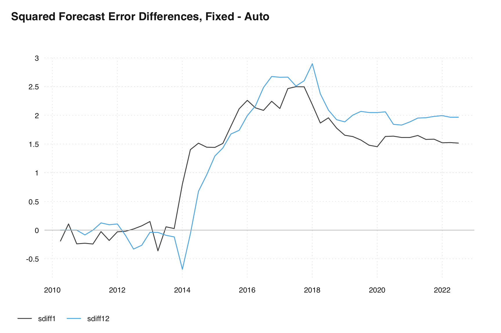
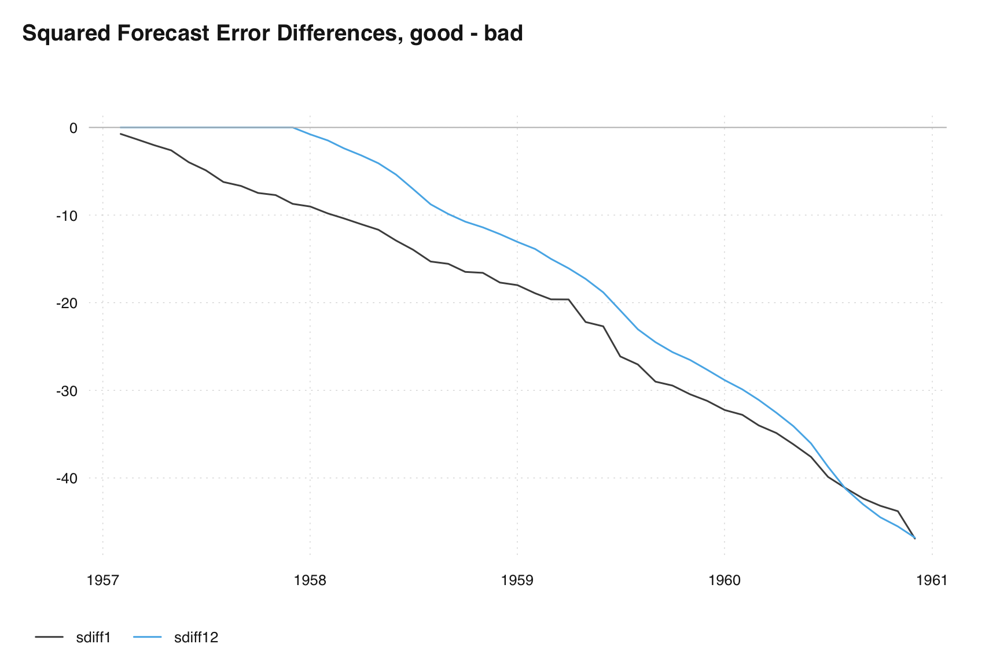

# We need to use out() to view the history tables.
# Currently not much support in seasonal for thest tables
# X13graph produces a nice suite of graphics if intersted in the history spec and
#. the associated revisions
old_sa <- seas(
x = old,
transform.function = "log",
regression.aictest = NULL,
outlier = NULL,
arima.model = "(1 1 1)(0 1 1)",
x11 = "",
regression.variables = "ls2008.4",
history = ""
# history.estimates = c("fcst")
)
auto_sa <- seas(
x = old,
x11 = "",
history = ""
# history.estimates = c("fcst")
)
# out(old_sa)
# out(auto_sa)16 Revisions
Revision play a major role in seasonal adjustment. Their role is multifaceted.
- Revisions can tell us about the stability of our adjustment process. Hence, they are in some sense a diagnostic tool to help us decided between two possible models or filters.
- Revisions have the additional role that most users of seasonal adjusted data don’t like them. It can be frustrating to get a seasonally adjusted value one month, only to have it change the following month.
- We favor the method that results in smaller revisions, provided that the final adjustments from different options or methods are deemed acceptable, with no residual seasonal or calendar effects.
We will try to address the first completely. The second and third are more delicate issues that usually require a policy decision and will vary person-to-person and agency-to-agency. Some will decide to revise all historical seasonal adjustments when a new month of data becomes available, and some may decide to fix historical seasonal adjustments and only release the most current. Each policy decision will have its own pros and cons that we will briefly discuss at the end of this chapter.
Let’s define a revision. Define \(A_{t|n}\) to be the seasonally adjusted value of \(y_t\) using \(y_1, y_2, \ldots, y_n\). Assume the full series is of length \(T\).
- A concurrent seasonal adjustment is then \(A_{t|t}\)
- A ``final’’ seasonal adjustment is \(A_{t|T}\)
- A revision is \(A_{t|T} - A_{t|t}\)
The history spec in X13 reports the percent revision:
\[ R_t = \frac{A_{t|T} - A_{t|t}}{A_{t|t}} \]
Note, if performing an additive adjustment that has negative values, X13 will only report the revision itself (\(R_t\) with 1 as a denominator) instead of the percent revision. This avoids issues with changing signs.
The analogous quantities are defined for trend and seasonally adjusted series.
16.1 History Spec
The program conducts multiple runs, iterating over a sequence of expanding intervals, effectively simulating the passage of time. Our preference lies with the approach that generates smaller revisions, assuming the final adjustments resulting from different options or methods are equally satisfactory without any remaining seasonal or calendar effects. Instead of referring to them as history diagnostics, we use the term “revisions history” to describe these measurements, as they quantify the magnitudes of adjustments made by incorporating series values. It’s important to note that these diagnostics do not include any changes or revisions to the underlying series values themselves.
We can look at any of the following estimates produced by the program
| Variable to specify | value |
|---|---|
sadj (default) |
seasonally adjusted series |
sadjchng |
period-to-period changes in the seasonally adjusted series |
trend |
trend |
trendchng |
period-to-period changes in the trend |
seasonal |
final and projected seasonal factors |
aic |
AICCs and maximum log likelihoods for the regARIMA model |
fcst |
forecasts and evolving mean square forecast errors |
arma |
estimated AR and MA coefficients |
td |
trading day regression coefficients |
Note, as the history run progresses towards its end, the gap between the concurrent series and the final series diminishes, leading to a decrease in the average revision across years. Keep this in mind when looking at history output:
- No specific pass/fail thresholds are recommended
- Look for large differences
- Don’t use for selecting seasonal filters as the diagnostic tends to prefer longer filters
16.2 Using History Spec to compare forecasts
The outline of what happenes when history.estimates = c("fcst") is added to a seasonal adjustment run:
- Truncate the series at time point \(t_0\).
- Apply the regARIMA model and generate forecasts for \(h\) steps ahead.
- Generate forecasts for one step ahead and one year ahead.
- Include the data point at time point \((t_0 + 1)\).
- Repeat the model fitting process and forecasting.
To make a decision between two model we can apply the following logic to our differences in sum of square forecast error plot.
\[ SSE^{(1, 2)}_{h, N} = \sum_{t = t_0}^{N-h} \left[ (Y_{t+h} - \widehat{Y}^{(1)}_{t_h|t})^2 - (Y_{t+h} - \widehat{Y}^{(2)}_{t_h|t})^2 \right] \]
- For a persistently decreasing value (negative slope) with increasing N, prefer Model 1.
- If there are persistently better forecasts from Model 1 (consistently summing negative values, indicating smaller errors), prefer Model 1.
- In the case of a stair-stepping down pattern, prefer Model 1.
- For a persistently increasing value (positive slope) with increasing N, prefer Model 2.
- If there is a stair-stepping up pattern, prefer Model 2.
Each line on the plot is a seperate comparison of two models.
- If one line is inconclusive, the other line can indicate model preference
- Weight seasonal forecasts more
- Weight most-recent result more
old_sa <- seas(
x = old,
transform.function = "log",
regression.aictest = NULL,
outlier = NULL,
arima.model = "(1 1 1)(0 1 1)",
x11 = "",
regression.variables = "ls2008.4",
history.estimates = c("fcst")
)
auto_sa <- seas(
x = old,
x11 = "",
history.estimates = c("fcst")
)
h1 <- series(old_sa, "fce")
#> To speed up, extend the `seas()` call (see ?series):
#> seas(x = old, transform.function = "log", regression.aictest = NULL, To speed up, extend the `seas()` call (see ?series):
#> outlier = NULL, arima.model = "(1 1 1)(0 1 1)", x11 = "", To speed up, extend the `seas()` call (see ?series):
#> regression.variables = "ls2008.4", history.estimates = c("fcst"), To speed up, extend the `seas()` call (see ?series):
#> history.save = "fce")
h2 <- series(auto_sa, "fce")
#> To speed up, extend the `seas()` call (see ?series):
#> seas(x = old, x11 = "", history.estimates = c("fcst"), history.save = "fce")
diff1 <- h1[,1] - h2[,1]
diff12 <- h1[,2] - h2[,2]
sdiff1 <- (diff1 * length(diff1)) / h2[length(h2[,1]),1]
sdiff12 <- (diff12 * length(diff12)) / h2[length(h2[,2]),2]
ts_plot(ts_c(sdiff1, sdiff12), title = "Squared Forecast Error Differences, Fixed - Auto")
abline(h=0, col = "grey")
m1 = seas(AirPassengers, x11 = "", history.estimates = c("fcst"))
m2 = seas(AirPassengers, x11 = "", arima.model = "(0 0 1)(0 0 0)", history.estimates = c("fcst"))
h1 <- series(m1, "fce")
#> To speed up, extend the `seas()` call (see ?series):
#> seas(x = AirPassengers, x11 = "", history.estimates = c("fcst"), To speed up, extend the `seas()` call (see ?series):
#> history.save = "fce")
h2 <- series(m2, "fce")
#> To speed up, extend the `seas()` call (see ?series):
#> seas(x = AirPassengers, x11 = "", arima.model = "(0 0 1)(0 0 0)", To speed up, extend the `seas()` call (see ?series):
#> history.estimates = c("fcst"), history.save = "fce")
diff1 <- h1[,1] - h2[,1]
diff12 <- h1[,2] - h2[,2]
sdiff1 <- (diff1 * length(diff1)) / h2[length(h2[,1]),1]
sdiff12 <- (diff12 * length(diff12)) / h2[length(h2[,2]),2]
ts_plot(ts_c(sdiff1, sdiff12), title = "Squared Forecast Error Differences, good - bad")
abline(h=0, col = "grey")
There are no specific pass/fail levels recommended for these results, indicating that there are no predetermined thresholds to determine success or failure. Instead, a comparison approach is suggested, particularly when significant differences emerge among the results. For example, it is expected that the disparity between the concurrent series and the final series diminishes gradually. Therefore, it is reasonable to anticipate a decrease in the average revision across years as the process nears completion. In such cases, it becomes crucial to thoroughly analyze and understand the reasons behind these disparities. Additionally, it is advised to exercise caution when utilizing these results as the sole basis for selecting a seasonal filter. Other factors and considerations should be taken into account to make an informed decision. It is worth noting that the diagnostic tends to favor longer filters, implying that the analysis tends to lean towards recommending seasonal filters with larger spans. However, it is important to weigh this tendency against other relevant factors and requirements specific to the context at hand to make the most appropriate choice.
16.3 What to do with Revisions
Revisions occur due to various factors including changes in the original series, late respondents, historical corrections, method or classification/definition changes in the original series, adding new observations, and the introduction of new values. These revisions can result in adjustments to model parameters, forecasts, potentially leading to changes in extreme values, as well as adjustments in seasonal and trend filter values.
If you data itself changes then a suggestion is to revise one or two previous values beyond where the original series has changed. You can also revise the same month/quarter a year ago.
If your data has remained constant and the only source of revision is seasonal adjustment, it is advised to set a policy for within year release and any annual review of your procedure and stick with it. For example, only revise the past 2 observations when a new value becomes available. During annual review revise the last full year.